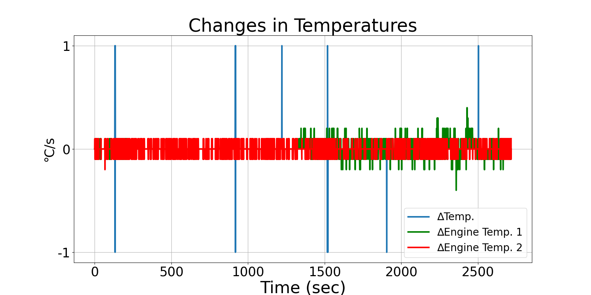
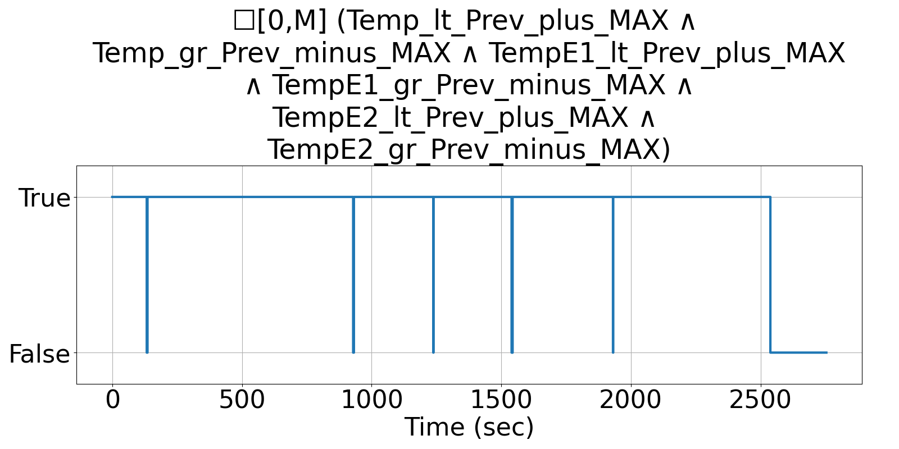

Integrating Runtime Verification into an
Automated UAS Traffic Management System
Matthew Cauwels, Abigail Hammer, Benjamin Hertz, Phillip H. Jones, Kristin Y. Rozier
This webpage contains supplementary specifications for "Integrating Runtime Verification into an
Automated UAS Traffic Management System" by M. Cauwels, A. Hammer, B. Hertz, P. H. Jones, and K. Y. Rozier
RC_UAS_1
Specification Description
The temperature (Temp, TempE1, TempE2) will not change by more than TEMP_DELTA_MAX each sample instance at any time
Signals Required
Temp, TempE1, TempE2
Boolean Conversion of Signals to Atomic Inputs
Temp_lt_Prev_plus_MAX: Temp < PREV_TEMP + TEMP_DELTA_MAX
Temp_gr_Prev_minus_MAX: Temp > PREV_TEMP - TEMP_DELTA_MAX
TempE1_lt_Prev_plus_MAX: TempE1 < PREV_TEMPE1 + TEMP_DELTA_MAX
TempE1_gr_Prev_minus_MAX: TempE1 > PREV_TEMPE1 - TEMP_DELTA_MAX
TempE2_lt_Prev_plus_MAX: TempE2 < PREV_TEMPE2 + TEMP_DELTA_MAX
TempE2_gr_Prev_minus_MAX: TempE2 > PREV_TEMPE2 - TEMP_DELTA_MAXMLTL Specification
☐[0,M] (Temp_lt_Prev_plus_MAX ∧ Temp_gr_Prev_minus_MAX ∧ TempE1_lt_Prev_plus_MAX ∧ TempE1_gr_Prev_minus_MAX ∧ TempE2_lt_Prev_plus_MAX ∧ TempE2_gr_Prev_minus_MAX)
Fault Explanation
Change in ambient or engine temperature is changed too rapidly
Additional Notes
TEMP_DELTA_MAX based on temperature sensor data sheet or experimental testing.
Figures

